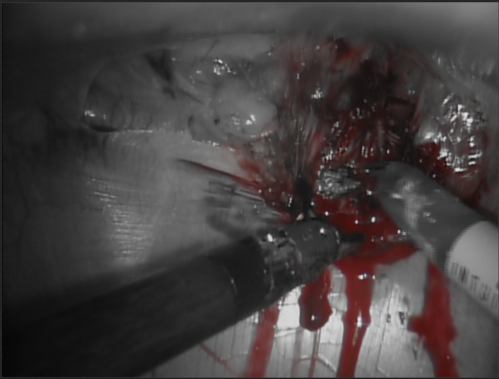
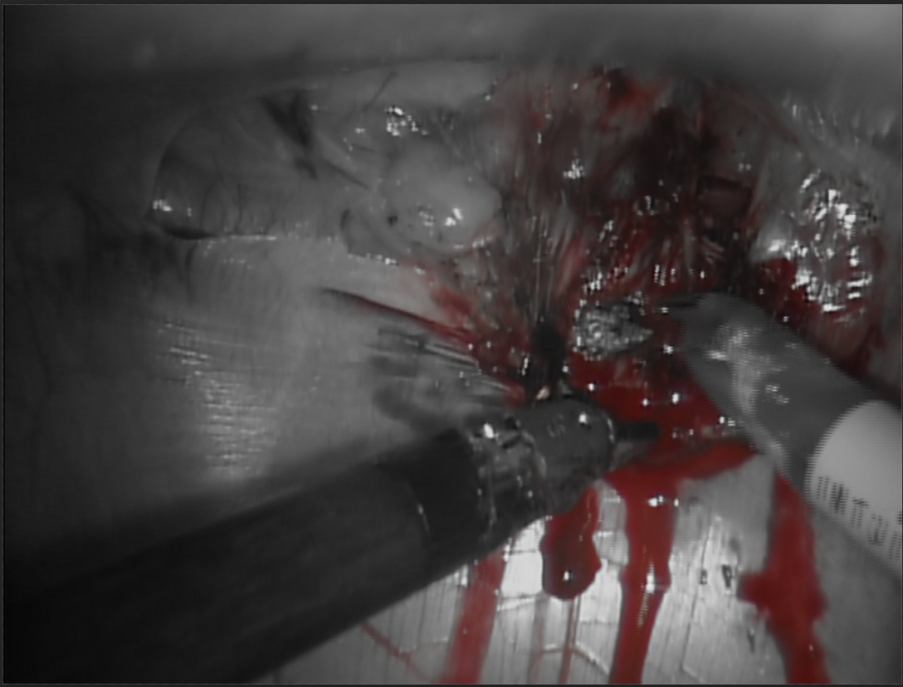

Discerning Blood from a Robotic Assisted Vivo Porcine Procedure of Diaphragm Dissection "A Proof of Concept"
Gunnar Beck NelsonFall 2021 ECE 5554 Computer Vision: Course Project
Virginia Tech
Abstract
Categorizing segments of anatomy images is the direction of surgical training with integrating machine learning practices. There are present issues in machine learning for endoscopic anatomy such as biases of data, image quality, and lighting. Biases in data include mislabeling of diagnoses, high resolution images not showcasing the likelihood of adverse events, and the contour of lighting in endoscopic images. The following proof of concept will dissect between different colors of anatomy images of blood from vivo porcine procedure of diaphragm dissection from the Hamlyn Centre Laproscopic/Endoscopic Video Dataset. The data involves blur due to cauterization induced smoke, significant deformation due to cardiac motion, artefacts due to bleeding, specular reflections, and instrument occlusion. To help discern between different segments of endoscopic anatomy images, coloration is considered the first novel approach. The approach would be utilizing RGB to HSV OpenCV library, to discern between the different colorizations of blood in each image from endoscopic video.Teaser figure
 

Introduction
Robotic Assisted Surgery (RAS) is a major innovation for endoscopic surgery, providing benefits to patients such as decrease in blood loss, pain infestations, and hospital stays [27]. Consequently, surgeons must learn these new methods of surgery, while considering the potential threat of adverse events, and international panels of experts have agreed on the need for a universal curriculum, to aid in surgical training [6][30]. Common training for RAS are dual consoles, simulators, and mentoring; are independent without universal or standard guidelines, and equipment for RAS training costs over $100,000 with such simulators utilizing their own hardware []. Remote training is considered another paradigm to explore with the consequence of COVID-19. Training for RAS has enforced a need for remote curricula where novice surgeons can utilize such equipment to train in a remote setting. The benefits of this pertain to wider adoption of surgical techniques, heighten productivity of obtaining skills, and cost effectiveness with reducing commute. Virtual Reality (VR) simulation is highly encouraged for remote training due to its universal approach to training, scalability, and cost-effectiveness []. However, the consequence of remote training is the lack of human interaction if one were to conduct curricula at a solo pace.Approach
Machine learning, meshed with computer vision practices, to segment different components of anatomy images, can aid novel surgeons to train in a remote setting. Blood was decided as the part of an image to segment since traditionally, surgeons rely solely on clinical judgment whether tissue is receiving adequate blood flow. There is present technology which pinpoint provides the surgeon the ability to visualize blood flow during a procedure allowing for quicker and more accurate clinical decisions. The following proof of concept created is this following dynamic webpage, which is accessible for all devices, mobile, desktop, and VR, showcasing the different image segmentations of blood to also prove ML practices for anatomy segmentation. The following also contains a parallel study with three mainstream ML models widely used in medical imaging: U-Net, LinkNet, and VGG-16 to measure the (Evalutation metric) to highlight the accuracy of which model is best suited for segmenting blood coloration in a RAS diaphragm dissection.


Experiments and results
Porcine Procedure of Diaphragm Dissection. The following data involves blur due to cauterization induced smoke, significant deformation due to cardiac motion, artefacts due to bleeding, specular reflections, and instrument occlusion. 1000 images from the video data is annotated in CVAT, based on the specific coloration of bleeding, from saturation values after converting the RGB colors to HSV values. Then the three ML models to be tested will decipher the accuracy of image segmentation of blood in instances where smoke is obscuring the image and can help aid surgeons in decipher bleeding during the likelihood of adverse events if the vision is obscured. The Jaccard index will be used to measure the input/out from each of the ML’s model’s accuracy for binary classification of blood for each of the three models. Namely evaluation will be set for Intersection over Union, Dice Coefficient, and Inference Time.